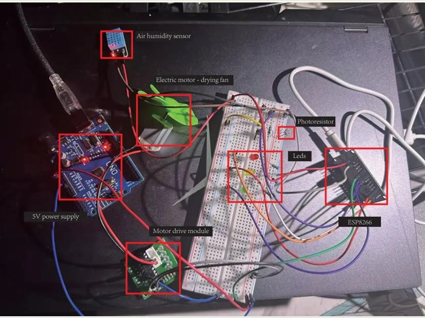
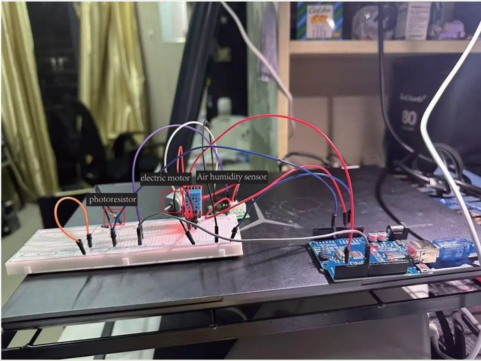

ESP8266 & MQTT Environment Monitoring物联网环境监测及智能控制
Networked sensors, MQTT messages, Python decisions and LED/fan actuation.
Server-side implementation, data workflows, algorithms and connected devices. / 服务端、数据流、算法与设备通信。

Networked sensors, MQTT messages, Python decisions and LED/fan actuation.

Local Arduino sensing and conditional DC motor control.
JavaScript interfaces, Python services, SQLite and editable programming notebooks.
Spring Boot · MySQL · AI/NFC integration.
Server-rendered forms and MySQL CRUD.
Individual algorithm-internship contribution.
Linked lists, BSTs and hash-table coursework.
Recovered course-companion reference; independent backend authorship is not claimed.